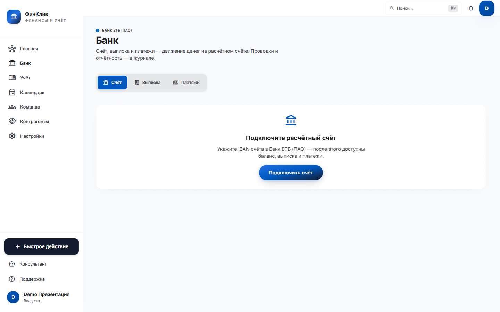
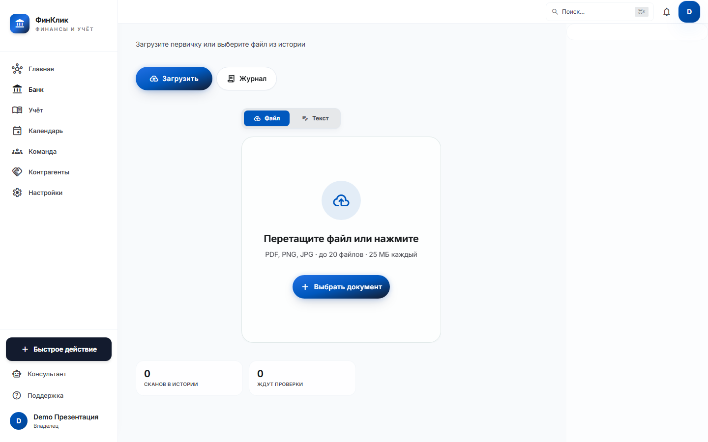

Партнёрство · ВТБ · Республика Беларусь
Цель: дать предпринимателю один сервис вместо Excel и разрозненных порталов — счёт в ВТБ, операции, налоги и сдача в ИМНС и ФСЗН.
← → или Пробел · 7 слайдов · Ctrl+P — PDF
Проблема
4 из 5
Решение
Клиент не прыгает между банком, Excel и порталами. Данные вводятся один раз — дальше система ведёт по шагам.
Функционал
Продукт
Клиент видит баланс и движение денег рядом с учётом и сроками. На главной — готовность к отчётности и ближайшие действия.

Продукт
Сканер заполняет операции. Пошаговый мастер ведёт к подаче в ИМНС и ФСЗН — с контролем готовности данных.

Ценность